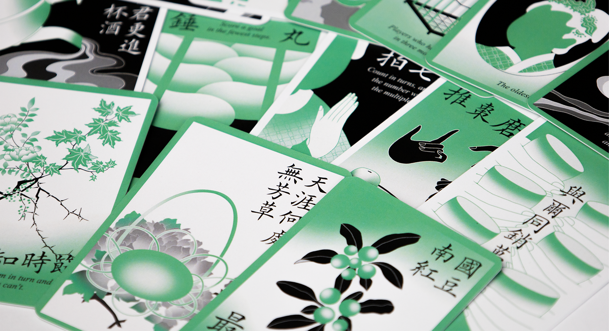
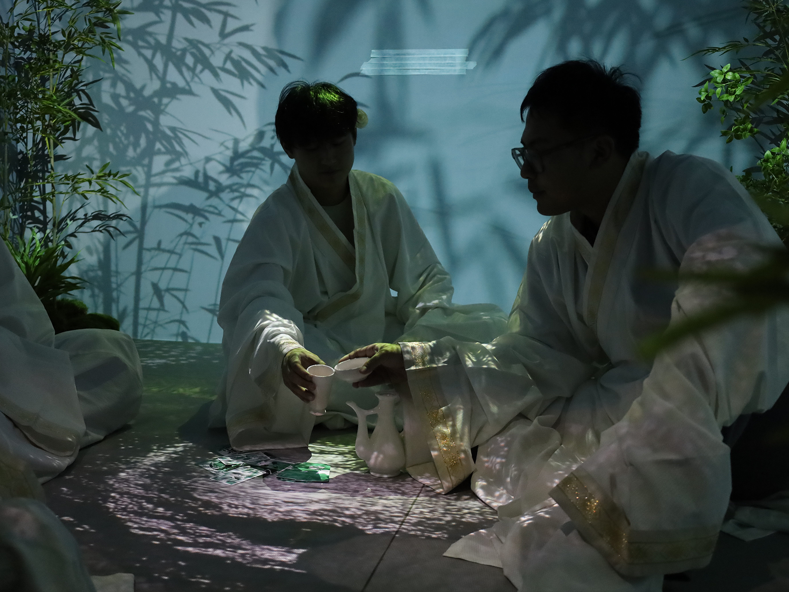

Vernal Soirée is a multi-sensory experience that reimagines the literati wine-drinking gatherings of China's Song Dynasty as a game for contemporary audiences.
A set of hand-drawn cards structures a sequence of ritualized interactions, while digital projections and 3D-modeled scenography extend the tabletop into an immersive spatial experience. Within this space, players engage in a choreography of drinking, reciting, and playing that brings the social rituals of a thousand-year-old tradition into the present.



